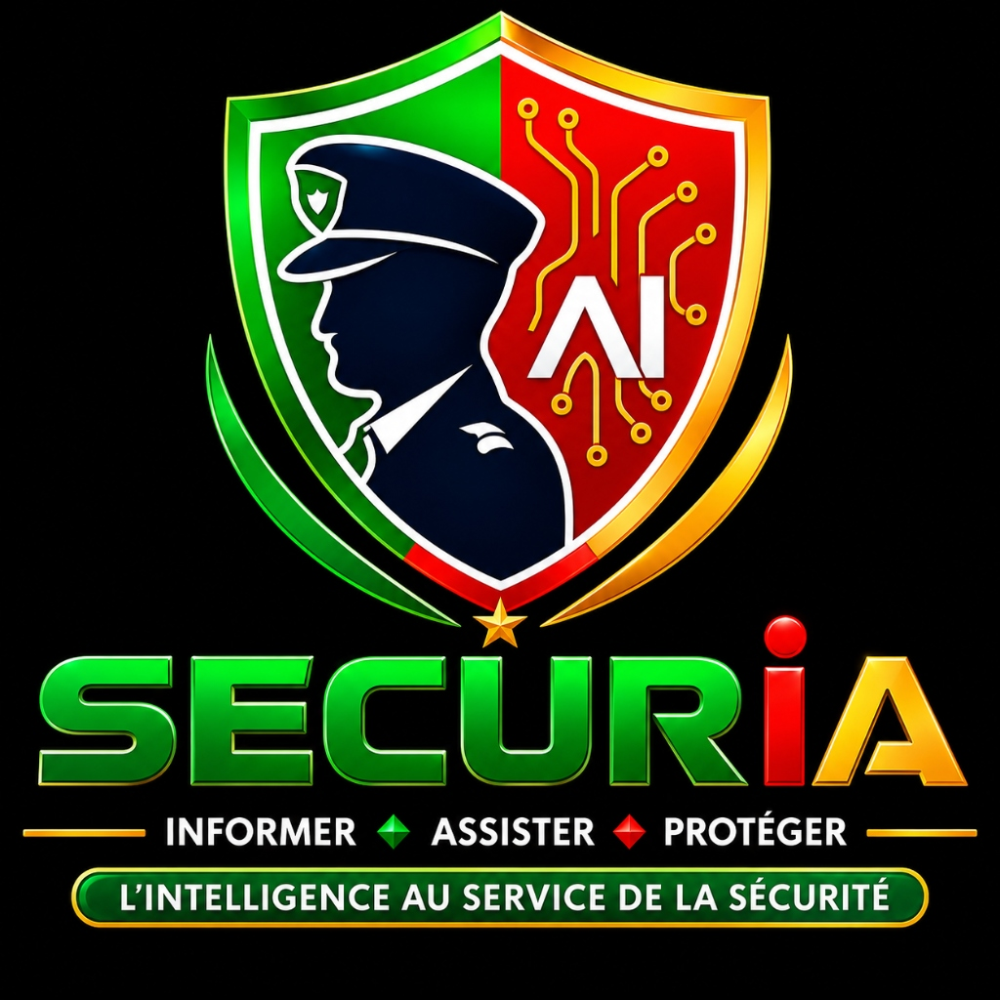

Vision & FondationsDe la feuille déchirée au policier augmenté : pourquoi j'ai créé SECUR.IA pour la Police de mon pays
Genèse et vision du projet SECUR.IA : comment une difficulté concrète d'annuaire papier sur le terrain a conduit à concevoir un écosystème d'intelligence artificielle souverain au service de la Sûreté nationale et des forces de police camerounaises.